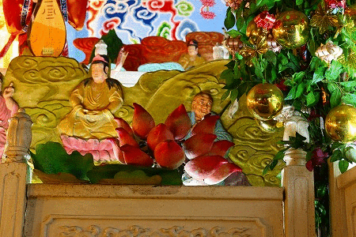

台湾大佛列伝、今回の旅のスタートは南部の大都市、
高雄から。
まず最初に好きなものから食べたいタイプの私はまずは南部最大の仏教寺院である
佛光山へと向かった。
因みに佛光山へは16年前、2000年に訪れたことがある。（以前のレポートは
こちら）
16年の間にかなりの変貌を遂げた、と聞き再訪してみることにしたのだ。
台湾新幹線の終点、高雄に最も近い左營駅からバスでも行けるが、時間が合わずにタクシーで乗り込んだのだが、どうも様子が変だ。
以前、訪問した佛光山とは似ても似つかぬ巨大な建物がそびえている。
これは
佛陀記念館といって佛光山のお寺のエリアの隣に作られた巨大な記念館なのだ。
どれくらい巨大な施設かというとご覧の通り。
上記の大きな建物はこの施設のごくごく一部であることが判る。

駐車場にあったバスのような建物。よく見たらトイレでした…。
各地からやってきた団体用のバスがずらり。
この教団の規模が伺えるというものだ。
この佛光山は台湾の中でも4指に入る大教団である。
世界中に支部を持ち（もちろん日本にもある）、専用のテレビチャンネルを持つ教団だ。
高雄の宿に到着して、とりあえずつけたテレビでいきなりここの寺の合同結婚式の様子が流れてきて驚いたが、今思えば佛光山チャンネルだったのだろう。
そんな佛光山の記念館には台湾全土から大勢の信者が訪れる。
憧れの本山にやって来て感無量の信者さん。
感極まってお坊さん（尼さん）にキャッシュをバンバン手渡してました…。
あまり玄関前で現金の授受はどうかと思ったが、信者さんたちは一種興奮状態だったので仕方あるまい。
最初の建物の中に入ると、そこは土産屋や開運グッズや佛光山グッズのショップなどが軒を連ねていた。
2階には素食（ベジタリアン中華）の食堂があり、他にも簡単な軽食の店があった。
なんと
スタバまであったのが驚きだった。
とりあえず、食事と買い物は後回しにして、先へと進む。
ショップ棟を抜けると
左右に七重の塔が8本並ぶゴージャスな参道。
その先には
眩いばかりに輝く大仏が鎮座している。
この大仏さん、周囲が広大なのであまり大きく見えないかもしれないが、かなり大きい。
手前にはインド調の記念館の本館が。
早速中に入ってみよう。
入り口には左右にずらりとスタッフさんが並んでおり、お出迎えしてくれている。
おおおお、なんという熱烈歓迎っぷり。
歓迎光臨〜てな感じですよ。
館内は主に仏教の歴史や佛陀の遺徳などを説明したもの。
手間暇資金をかけた立派な展示だった。
中には仏陀の生涯を説明する3D映画もあって（あ、リアルな風や雨もあったから4Dか！）、見ごたえはあった。
が、いかんせんそんな立派な展示を求めてこんなところにやってきたわけではないので、若干の肩透かし感は否めない。
俺としては前回訪問時に感動した
アレが健在ならそれでいいんだよう〜。
他にも精巧な仏像や展示が目白押し。正直当方の望んでいるものではなかったのでテンションは若干下がり目…。
立派な展示の中、唯一グッと来たのがこの写真。
大仏さんの脳天から花火打っちゃってますけど。
あともう一つハートに火がついたはこちら。
佛光山の活動を説明するコーナーに展示してあった佛光山ナップザック。
確かちびっこたちが活動する際に背負っていたものらしいのだが、中央に佛光山のシンボルである引接大仏がプリントされている。
コレ、ちょうちょうちょう欲しー！！！！
と思い、館内のグッズショップとか探しまくったんだけど、売られているのは数珠とかクリスタルの仏像とかお経のＣＤとか本とかそんなのばっか。
このナップザック絶対販売した方がいいですよ。
コレ300円位で売ってたら100個は買ってたね！
あとこの方もかなり奇妙だったな…。
そんなこんなで記念館を見て回った後、大仏さんに謁見。
台座や下の建物含めて108メートルもあるという。
…てことは
大仏さんの部分だけでも40メートル以上はありそう。
座像では世界でもトップクラスといっていいだろう。
でかいけど周辺も規格外の建物が多いので、その巨大さがあまり実感出来ないのだが。
残念ながら大仏さんに肉薄することはならず、前庭から眺めるのみ。
佛陀記念館は大体こんな感じだった。撮影できない部分が多かったので画像少なくてすまんのう。
お金かかってて豪華で充実の展示だったが、まあ、真面目な展示だったな。
佛光山というとこの佛陀記念館だけ観て帰ってしまう人も多いが、それはこの寺のごく一部でしかない。
いや、むしろこの寺の着飾った部分しか見ていないことになる。
この寺のもっとも面白い、そして私が愛してやまない部分はお寺エリアにあるのだ。
とはいえこの記念館エリアからお寺のエリアまでは隣接しているものの、歩いていくにはチト遠い。
ショップ、食堂棟の前にこのような看板があるのでここから無料シャトルバスが出ているので利用するのが良いだろう。
…というわけで前口上が長くなってしまって恐縮だが、ここからが本題です。
シャトルバスは佛光山のお寺のエリアの入り口に着く。
食堂や売店があるエリアを過ぎると不二門という立派な山門が現れる。
ここでさらに注意！
ここの不二門をそのままスルーしちゃダメ！絶対！
いやむしろこの先の本堂とかそういうのもどうでもいいから！
門の右手にあるココ↓を見逃さぬように！
こここそがこの佛光山の肝というべき
浄土洞窟である。
浄土洞窟ですよ。
電動花燈ですよ！
GO!GO!GO!
一歩中に入るときらびやかな世界が。
右手には
1/1スケールのコンクリ人形が並んでいる。
クレヨンしんちゃんシャツだ…。
台湾でも大人気だもんね。

大勢の人が仏様の遺徳に跪き、合掌している。
全人類佛陀リスペクトの図（多分）。

この人も敬虔な仏教徒なのだろうか…。
そういえば以前来た時は金髪の女性だった人形がアジア人に「改造」されていた。
対面は全動物仏教帰依の図（多分）。
流石に四足動物は合掌してませんでした…。鹿カワイイ。
先に進むとさらに洞内の空気がだんだん濃密になってくる。
ああ、良かった。相変わらず胡散臭い感じがそのまま残っていてくれて。
テラテラした仏像、安い電飾。こってりとした装飾。
素晴らしすぎる！
洞内には五百羅漢像がたっぶりと、こってりと並んでいる。
眉毛が妙に長い羅漢さんとか…
眉毛が超絶長い羅漢さんとか…
キュートな羅漢さんとか。
先ほどの佛陀記念館では見られなかったどぎつい色彩と装飾の世界。
他の人はいざ知らず、俺が見たいのは
いかに神仏へのリスペクトを尋常じゃない方法を用いて表現するか、なのだ！
その点、ここの洞窟にある羅漢像や仏像は素晴らしい。
後ろの方は絵になっちゃってますがそれもよし！

九品洞という門を潜ってみます…
鍾乳洞のような妖しい世界が展開されていた。
クリスマスの飾りのような電飾が妙にチープだが、先ほど訪れた佛陀記念館にはない
別種の「熱」が感じられる。
ただしこの配線はチョット…
壁面には絵画とレリーフが混ざり合ったような不思議な仏画が。
さらに進むと突如大きな空間に出る。
…この浄土洞窟のハイライトである釈迦三尊像が安置されているホールである。
本サイト既報の通り、釈迦三尊像をぐるりと取り囲む天女や花が
電動で動くのだ。
これが入り口に書いてあった電動花燈というやつだ。

仏教版イッツアリトルワールド。
佛陀の威光の基に世界はひとつなのだ〜、的な世界観が展開されている。
この過剰なサービス精神こそが珍寺の本質なのだ。
神仏への過剰な愛、参拝してくれた人への過剰な愛…。
全ては過剰な「愛」から始まっているのだ。
その過剰な愛に身を委ねつつ先へ進む。
もう、この辺まで来ると「何でお寺がテーマパークみたいなの？」とか「お寺がこんなのって罰当たりじゃないの？」とかいった愚問は十万億土の彼方にポポイのポイ！
いいんです！気持ちいいんですから。
多くの信者を集める宗教の根源には「快楽」の要素が内包されているはずなのだ。
何故なら宗教とは言いかえれば
ある種の快楽を得る手段であるから。
人々の救済、自己を痛めつける修行、深い瞑想、喜捨、祈り、祭り…
一見苦しそうだったり辛そうだったりする宗教的行為であっても恍惚感を得るための手段なのではなかろうか。
だから宗教に快楽を求めるのは自然な流れなのだ。
当サイトで数多く紹介した参拝と娯楽が一体化した施設は、一軒イロモノと思われがちだが、実は宗教の根源的な部分を体現しているのである。
…と、あくまでも私見を述べさせていただいたが、まあ、６割引きで聞いてください。
少なくとも自分は
お寺は面白けりゃ面白い程偉い！と思ってます。
異論？反論？そりゃあるでしょうよ。認めます、認めます。
天上世界では天女さんたちがひらひらと舞い踊る。
こりゃ快楽の園ですよ。
見渡すとこんな感じ。
遊園地のように華麗でウキウキする世界だ。
羅漢さんのお腹からも思わず顔がとび出しちゃってます。
釈迦と十大弟子。
お釈迦様の光背がめちゃサイケデリックでたまらない！
壁沿いのお坊さん（？）も合掌して頭をへこへこ下げています。
最後はグランドキャバレー級の大団円。
仏教オールスターズがズラリと並んで宗教的恍惚感をマックスに盛り上げてくれます。
最後は謎のルーレットで運試し。
ある意味、台湾最強の仏教パラダイスといえよう。
ああ、やっぱりお寺はこうじゃなくちゃ！と強く思った次第です。
…というわけで本堂に向かう。
浄土洞窟で大興奮したのであとは軽くクールダウンする感じなのだ。
本堂の三尊像を拝む（いや、充分デカいんですけどね）。
この寺のもう一つの名物である引接大仏にご挨拶しようと向うも、
修繕中で拝むことも出来ませんでした。
まあ、資料館が増設され、観光客も増え、寺院としては興隆を極めているようだったが、私にしてみれば相変わらず
浄土洞窟が素敵な風情で健在だったのが、何よりもうれしかった。
ただし一部の情報では、この浄土洞窟が現在（2017年1月）工事中だとか。
今後浄土洞窟がどうなるのか、楽しみでもあり、不安でもあり。
浄土洞窟の最新情報、ご存じの方いらっしゃったら教えてくださいませー！
駐車場の片隅にいた耳掻きをする/される僧の像。
耳掻いてる方の目が怖い…。そして耳掻きがスゲー深く入っちゃってますけど、大丈夫ですか？
というわけで佛光山まとめ
・左營駅からのバスは時間を確認しておくこと（バス会社のサイトあり）
・仏陀資料館だけ見て満足することなかれ
・お寺と資料館の行き来はシャトルバスで
・食事は資料館よりお寺の門前にある素食館の方が旨い
・本堂だけ見て帰ることなかれ、不二門脇の浄土洞窟にこそこの寺の神髄がある
…というわけで台湾の不思議旅、上々のスタートだった